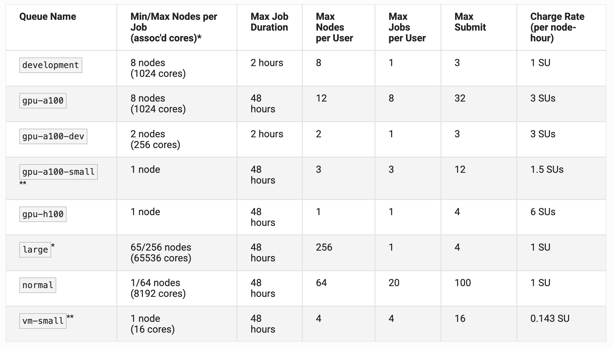

High Peformance Computing (HPC)
High Peformance Computing (HPC) refers to the aggregation of computing resources (i.e. supercomputers or clusters) to achieve performance far greater than a single workstation or server.
Basic HPC System Architecture
We can think of an HPC system as a very large and complicated laboratory instrument.

IMPORTANT: Login vs. Compute Nodes
An HPC system has login nodes and compute nodes. We cannot run applications on the login nodes because they are designed as a prep area, where you may edit and manage files, compile code, perform file management, issue transfers, submit new and track existing batch jobs etc. The login nodes provide an interface to the “back-end” compute nodes, where actual computations occur and where research is done. Most importanly, login nodes are a shared resources. To run a job, instead, we must use the compute nodes.
Some Systems Available at TACC
Clusters
Lonestar6: Supporting Texas researchers in providing simulation, data analysis, visualization, and AI/machine learning.
Vista: Vista expands TACC’s capacity for AI and ensures that the broadscience, engineering, and education research communities have access to the most advanced computing and AI technologies.
Stampede3: A strategic resource advancing NSF’s supercomputing ecosystem for the nation’s open science community.
Storage Systems
Stockyard: Global file system, it is accessible from all of TACC’s systems. Capacity of 6,800 TB.
Corral: Storage and data management system designed to support large-scale collections and a collaborative research environment. Capacity of 40,000 TB.
Ranch: Long-term data archiving system, high capacity (1,000,000 TB).
Storage systems are shared across all TACC clusters.
HPC terminology
On an HPC cluster, thousands of users run jobs simultaneously; therefore, the cluster is partitioned to accommodate jobs with varying priorities, hardware requirements, and execution times. To understand the organization of a cluster, it is useful to learn these concepts:
Service Units (SUs) are the unit of measure of compute time on a supercomputer. 1 SU = one node per one hour. Difference types of nodes may have different “charge rates”. GPU nodes, for example, charge 3 SUs per hour, whereas a CPU node charge just 1 SU per hour.
Allocation: An allocation is a “bundle” of SUs (node-hours) assigned to a user or a project. It is an approved budget of computing time that a project can use.
Reservation: A reservation is a pre-arranged, guaranteed block of specific compute nodes set aside exclusively for a user during a designated timeframe, typically for special events like workshops, training, or live demonstrations.
Queue: A queue is a specific subdivision of a supercomputer’s nodes, categorized by hardware type, time limit, or job size and priority, where users submit their computing jobs to be scheduled and executed.
Lonestar6 Queues
For example, these are the queues available on Lonestar 6. It is important to understand the queue limitations and pick a queue that is appropriate for your job. Documentation can be found here.
Today we will use the queue normal.

